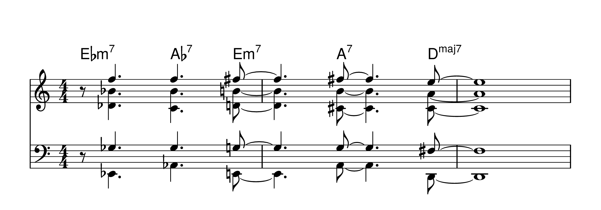

Rules of Arranging
One might absorb this information best if they notated the following in their own handwriting. This would allow for the digesting of concepts at a slower pace.
The rules of arranging are, in one form or another, openly accessible and generally universal in concept. Music that comes from within is personal and singular in initial applicability.
As such, one must compose and arrange what sounds good to them. What sounds good often aligns with the rules of arranging, but will additionally incorporate styles and techniques not presented here.
I.
The Ground Rules Solely for the Purposes of Simplifying Matters
- Major Chords
- I Major chord takes ionian scale (Diatonic).
- IV Major chord takes lydian scale (Diatonic).
- ♭II Major chord takes lydian scale (Non-diatonic).
- ♭IV Major chord takes lydian scale (Non-diatonic).
- ♭VII Major chord takes lydian scale (Non-diatonic).
- Avoid IV + Ionian.
- There is no “avoid” in Lydian.
- Non-Tonic Minor Seventh Chords
- ii minor chord takes dorian (Diatonic).
- iii minor chord takes phrygian (Diatonic).
- vi minor chord takes aeolian (Diatonic).
- vii minor chord flat five takese locrian (Diatonic).
- ii minor chord flat five takes locrian (Non-diatonic).
- iii minor chord flat five takes locrian (Non-diatonic).
- ♯iv minor chord flat five takes locrian (Non-diatonic).
- iv minor chord takes dorian (Non-diatonic).
- Avoid 6 (13) on ii minor chord dorian.
- Avoid 2 on iii minor chord phrygian.
- Avoid 6 on vi minor chord aeolian.
- Avoid 2 on all locrian.
- Avoid 6 on iv minor chord dorian.
- Basically, all minor seven flat five chords take locrian.
- Dominant Seventh Chords
- - The altered will be a seven note scale with 3 chord tones and 4 passing tones. The chord tones are 1, 3, ♭7. The passing tones are ♭9, ♯9, ♭5, ♯5.
- - 1, 3, ♭7 should be spelled how they should. The 4 passing tones can be spelled any other way.
- - There is no “Avoid” note on the altered scale.
- - Lydian ♭7 is exactly what it says: it is a lydian scale with a flat seven.
- - There is no “Avoid” note on lydian flat seven.
- - If sus chord, avoid 3.
- - Mixolydian avoid 4 (mixolydian “sus”, avoid 3).
- V7 in major key
- Mixolydian
- Altered
- V7 in minor key
- H – P5↓
- Altered
- II7 in major key
- Lydian flat seven
- II7 in minor key
- Altered
- ♭II7 in major/minor key
- Lydian flat seven
- IV7 in major/minor key
- Lydian flat seven
- ♭VI7 in major/minor key
- Lydian flat seven
- ♭VII7 in major/minor key
- H – P5↓
- Altered
- VI7 in major/minor key
- H – P5↓
- Altered
- VII7 in major/minor key
- Altered
- I7 in major/minor key
- Mixolydian
- Lydian flat seven
H – P5↓= Harmonic minor perfect fifth below
e.g: G7 = C harmonic minor
Examples of scales to use:
- The scale will contain:
- I, ♭II, III, IV, V, plus ♭VI or ♮VI and/or ♭VII or ♮VII depending on:
- Melody
- Chord symbol
- Bass line
- Harmonic content
- There is no “Avoid” in Tonic Minor.
- I, ♭III, V are chord tones. II, IV are passing tones. VI, VII are chord tones (extensions).
- Whole tone scale can be used.
- Augmented scale can be used.
- Try to make the augmented seven chord fit something from the dominant seven chords first.
- All notes in whole tone scale are chord tones.
- Aside from root, M3, and ♯5, the other notes in augmented scale are chord extensions.
- The substitute of ♯I° is a ii-V in a minor key a major second above the key. e.g. Key of F, substitute for F♯° (♯I°) is Amin7♭5 D7♭9.
- The substitute for ♯II° or ♭III° is a ii-V in minor key a major third above the key. e.g. Key of F, substitute for G♯° (♯II°) or Ab° (♭III°) is Bmin7♭5 E7♭9.
- On I°, use the rules of ♯II°/♭III° since the notes are the same.
- On the substitute for ♯I°, the analysis will be iii minor seven flat five to VI7 (VI7 uses H – P5↓).
- On the substitute for ♯II°/♭III° the analysis will be ♯IV minor seven flat five to VII7 locrian.
II.
Voice Leading Rules
- Analyze melody for PC and SC.
- The melodic contour will suggest the size, shape, and amount of PD in the voices.
- Identify all half-steps in the scale: half-steps are where the action is.
- Set the size of important voicing/voices by placing the bottom voice first.
- Next, choose the amount and placement of PD.
- The lower on placement of PDs, the richer it will be.
- Build remainder of voicing from the top down.
- Choose notes because of their intervallic relationship with all other notes in the voicing/voices (adjacent and non-adjacent).
- Consonance gives plainness. Dissonance gives richness.
- Notes come from the available note-scale of the mode.
- Don’t use “Avoid” notes, or “Should Avoid” notes.
- Conditional “Avoid” notes are not to be used because of melodic, scale, and PD considerations.
- No seconds, major or minor, in top two voices except clusters or percussive effects.
- In a cluster, it’s a major seventh or less between the outside two voices.
- No augmented fourths in the top two voices.
- Don’t separate seconds, major or minor, from the adjacent voice above and below by more than augmented fourth EXCEPT when the seconds are separated from the bottom voice, where anything goes.
- No more than a major sixth, and preferably a perfect fifth, between adjacent voices, EXCEPT between bottom two voices, where anything goes.
- No ♭9 intervals between any two intervals, adjacent or not adjacent interval, EXCEPT ♭9/V ♭9/I Imaj7//maj7 ♭V/♭IV//min7♭5 except when ♭5 is in the lead.
- No 5 or ♭5 in the same voicing EXCEPT for lydian-major.
- The above rule also pertains to lydian flat 7.
- No 5 or ♯5 in the same voicing, EXCEPT in tonic minor. e.g. IIImin7phrygian.
- The above rule also pertains to dominant seven harmonic minor seven.
- This system gives functions other than I in the bass and this is desirable. When this occurs, imagine a root directly beneath the bottom note in each voicing and apply the Lower Interval Limits (LIL).
- Lower Interval Limits (LIL) are the lowest combination of two notes that may sound sensible for most applications. It is subjective to an extent.
- ♭5 on a dominant seven – when it is in the scale, may function as low as you want, given rule XXIV.
- 4 on non-tonic minor 7 and minor seven flat 5 may function as low as desired, given rule XXIV.
- The bottom 3 or 4 voices must not outline a basic chord that is formed for the intended chord.
- Doublings are okay, if they enhance the desired richness or plainness.
PC – Primary Climax
SC – Secondary Climax
PD – Prime Dissonance
III.
Line Rules
- Analyze the melody for PC and SC.
- Analyze the melody for HP – INCLUDING PC and SC.
- The melody curve will suggest the shape, amount of PD and style of voicings at the HPs (climaxes).
- Voice the HPs using interval voicings and triad structures.
- The conditions of voicings in line passages:
- Bigger voicings are small than usual.
- Smaller voicings are bigger than normal.
- An overall symmetry (as symmetric as possible).
- PD at major seven and available ♭9 when possible.
- Voice the PC first, the SC, then remaining HP.
- Move from HP to HP in the under parts by melodic lines (the same rhythhm as the melody).
- The under parts tonally come from the available note-scale of the moment.
- There are no “Avoid” notes at the line points (all notes are good) (in the LINES [These are Line Rules]).
- Out of scale chromatics may be used (BE CAREFUL).
- Out of scale chromatics: a note that moves up or down by a half-step in a scale note.
- No consecutive out of scale chromatics.
- No consecutive seconds in top two voices.
- No b9 intervals in the LINES with the same exceptions as the voicing rules.
- All the other interval rules from the voicing rules DO NOT APPLY (LIL, “Avoid” notes, seconds separated, etc).
- No inner part may move more than a whole-tone more than the lead voice (conservative rules for the purpose of this course).
- When the lead moves, under parts must move (no repeated notes).
- Doublings at the perfect octave or unison is okay.
- Doublings must be prepared and resolved in contrary motions.
- Doublings may continue for as many attacks as desired finally resolving in contrary motion.
- Under parts must be in tonal character with the lead:
- Blue note
- Various altered dominant sevens
- Contrary motion in at least one voice is desired.
- Parts may and should cross.
- Allow enough space to work the lines.
- Line rules apply only into and out of HPs.
- Move as smoothly as possible into the first instance of a non-diatonic note.
- When using an out of scale chromatic in the lead do not use a scale note in the under parts that is half a step above or below in any octave.
- This technique is useful in going from unison to a voicing or vice versa.
- PD at the line points (anywhere in line) must not exceed PD at the related HP (based on the HP with the lowest amount of PD).
- The suggested order of working lines:
- Lead line
- Bottom
- Second voice
- Any or all others
- The last melodic attack before a harmonized point often resembles an approach harmonization. When this occurs, allow it to complete itself.
- Do not write any line you cannot sing.
HP – Harmonized Point
Take note of the expansion of the line going into the HP (Harmonized Point) at the point of climax. Climax is PD (Primary Dissonance).
Multiple HPs (Harmonized Points) can be used for emphasis. Follow the shape of the melody and pinpoint the climax of a line.
IV.
Melodic Analysis - Suggestions for Notes to be Harmonized
- Notes of long duration:
- Ballad: quarter or longer
- Medium tempo (not ballad): 1 and ½ beats or longer
- The first important note of a change in key.
- The first important note of a change of “modality” within a key.
- The first important note of a non-diatonic chord within a key.
- Notes preceded and/or followed by interval of a major third or larger except minor third or larger a point of melodic turn.
- Note followed by rests.
- Notes in percussive phrases.
- Notes in arpeggiated phrases.
- Accented notes.
- Any note that you deem important enough to harmonize.
- The first note of a phrase and/or a note preceded by a rest doesn’t necessarily have to be harmonized.
- These rules are not right or wrong, but conservative suggestions.
- “Change of modality” – that term is used loosely.
V.
Concerting of Voicings
- Voice the brass first, allowing enough space between the brass notes.
- Brass do not have to sound or satisfy the voicing rules as a section.
- Insert the saxophones between the brass voicings.
- Saxes do not have to sound or satisfy the voicing rule as a section.
- ALL voices must satisfy the voicing rules.
- No adjacent brass or adjacent reed voices except in extreme register situations. This would look like: trumpet → sax → trumpet → sax → trombone → sax → trombone → etc.
- NO doublings at the perfect unison within a section; doublings at the octave or more are okay.
- Do not use this technique when the lead is below treble clef in-staff A.
- Beware of the b9 between the high reed and the low brass.
The tight range necessitates the adjacent brass and reed voicings.
It is a fine, but not an ideal concerting of voicings in a grand sense.
The wider range allows for minimal adjacent brass and reed voicings.
Each section sounds great on their own and has minimal overlap.
Concerting of Lines
- Use line rules on brass, then on saxes.
- Watch out for ♭9 when doubling.
- It is a good idea not to couple lead brass and reeds.
VI.
Practical Applications of Voicings in Linewriting
- Linewriting consists of lines and climax points.
- Consider the treatment of melody with control of dissonances to contrast consonance.
- Spread voicing has the root in the bass. It is good for non-busy parts or percussive hits and punches.
- Spread voicing is also called open voicing.
- Closed voicing can or can not have root in the bass - you be the judge.
- Closed voicing is also called cluster voicing.

Spread voicings generally have larger intervals such as P4, P5, m6, and M6.
Closed voicings generally have smaller intervals such as m2, M2, and M3.
The above closed voicings can be used consecutively for effect.
Utilizing perfect fourths can provide a unanimous balance of consonance and dissonance.
Spread voicings can also be used consecutively for effect.
VII.
Sonancy
- Consonance is polar opposite of dissonance.
- The action is at climax points; the rest is just lines.
- Consonance can be highlighted using climax points and lines.
- Dissonance can be highlighted using climax points and lines.
- Really, just moving notes can be anything.
Below is the Sonancy Spectrum:
Take note that there is no tri-tone included in the Sonancy Spectrum. Derive from that what you wish.
Sonancy in Action
The four examples below show different ways of treating the same melodic line.
Analyze what rules are being applied and how sonancy is being used to produce the desired effect.

VIII.
Instrument Range Glossary
{kind=link}
{kind=link}
Taken from Glenn Miller’s Method for Orchestral Arranging (c) 1943